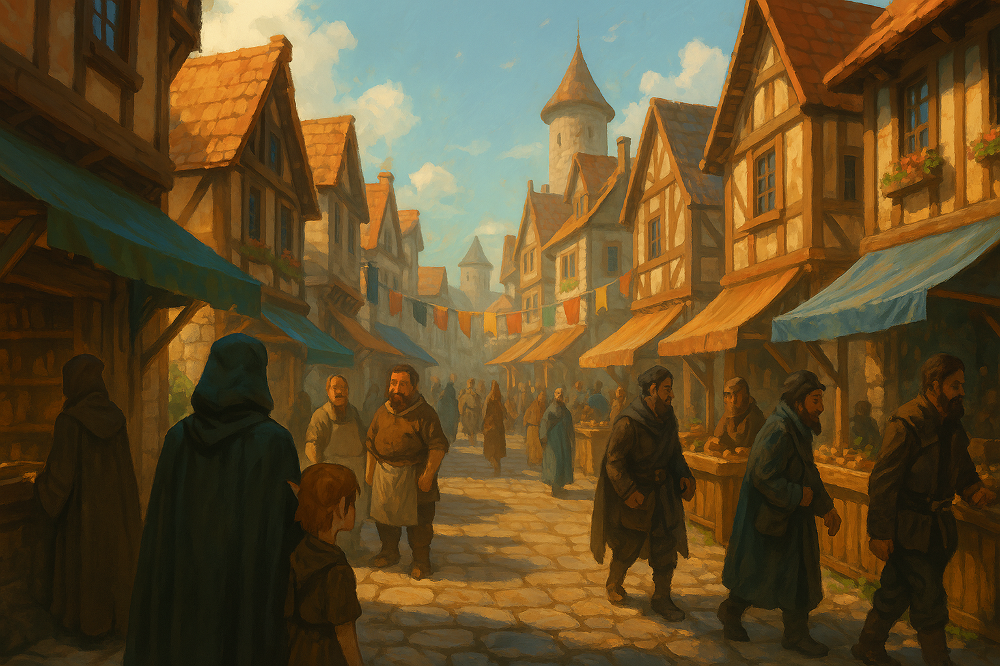

Chapter 2: Streets of Korringfield
Korringfield Reunion


Korringfield Reunion
15048.10.01
台北市議員在寇林菲爾德的市中心逛著。
烏柯帶著崔夏走入了一間魔法用品店，叫「魔法師的雜貨店」，看起來像間連鎖的雜貨店一般。詢問了店員是否有能夠驅除魔法的用品後，店員帶著兩人來到了店後面的辦公室，讓裡面的魔法師諮詢，並收了100金幣的諮詢費。
辦公室內，坐著一個翹著二郎腿的少年，自稱是大魔法師，且不願透露他的姓名。少年魔法師在聽了烏柯的說明後，掐了掐崔夏的手腕，並決定試著替他驅除體內的邪氣。少年魔法師手上散發出了青藍色的火焰，接著逐漸蔓延至全身。他口中念念有詞，非常專注。等儀式結束後，崔夏表示他的確沒有感受到身上的不適了，而少年魔法師也表示自己不缺錢，沒有要多收治療費。烏柯有些半信半疑，不過還是感謝了少年魔法師。少年魔法師也提供了優惠，讓他們在店內消費有所折扣。
走入一條小巷，烏柯看見了一個放在地上的奇異盒子，上面用德魯伊語寫了些字。他打開了盒子，裡面有一個蛇銜著自己尾巴造型的戒指，於是他將戒指戴了上自己的手指。
對逛街較沒有興趣的龍恩則決定走回爵士宅邸，卻在半路上迷路了。花了些時間，龍恩重新走回市中心，並避開剛剛走錯的路，終於回到了爵士宅邸。爵士和龍恩聊了聊，並帶他到了自己的寶藏陳列室。爵士翻箱倒櫃，找到了兩個腕帶，送給了龍恩作為小禮物。
帕拉丁回到了市中心，而其他的冒險者們也陸續逛著街，採買武器與其他商品。
家亨意外得到了幾項寶物，包含一個乳白色的飾品，一盒魔法卡片，以及一張「七彩天堂」的免費券。
採買結束後，米多莉到鎮上的守護之神津菈教堂進行禮拜，也打聽了關於寇林菲爾德的軼聞瑣事。
同時間，其他冒險者們則去了當地最熱鬧的酒館坐了一下。酒館角落，一個拄著拐杖的老太太緩步走來，按了帕拉丁的肩膀，要幫帕拉丁做占卜。帕拉丁到了老太太的位子，老太太用了水晶球，和帕拉丁進行了簡單的占卜，而後提出了一個交易。他知道帕拉丁的父親，馬格努斯爵士，身體快要不行了，如果帕拉丁願意獻出他的一隻眼睛或一隻耳朵，他便可讓馬格努斯爵士完全恢復健康。帕拉丁在幾經思索後，同意了這個提議。老太太要帕拉丁隔日晚上相見，並告訴他，如果他找不到位置，跟著他的黑貓走就是了。
在帕拉丁之後，YHWH也去找老太太占卜，打聽了過去將他趕出學院的同僚的消息，以及弗列里爵士與他太太似乎感情不睦的真相。嗚兮噢尼也帶著神王尼可前去找老太太占卜，希望能探聽神王尼可未來統治哥布林王國的細節。不過在嗚兮噢尼和老太太起了一點小衝突後，他便把神王尼可留在老太太的桌子上，轉頭回自己的座位。幾位冒險者發現老太太似乎在對神王尼可施法，經過嗚兮噢尼確認後，發現神王尼可似乎不再像過去那樣躁動，變得乖乖的，一個活生生的魁儡國王。嗚兮噢尼向老太太大力感謝後，便把神王尼可帶回座位去。
眾人回到弗列里爵士宅邸。烏柯找了弗列里爵士，成功在他房間內的神秘書房拿到一本《儀式大全》，不過似乎沒有作者的名字。嗚兮噢尼也向弗列里爵士要了額外兩件黑色緊身衣，作為備用。
短暫休息後，大夥兒便回到一樓大廳。大廳後方的牆壁突然被拉開，羅莎笑盈盈地帶領著大家，走到宅邸後方的另一座豪宅：他們的餐廳。裡面廚師們細心的備餐，冒險者們也大快朵頤。廚師們也依照冒險者的要求，為神王尼可以及米多莉準備了他們單點的食物。
晚餐後，弗列里爵士告訴帕拉丁，明天再帶他們去「好地方」，也歡迎朋友們一同前往。
15048.10.02
在爵士宅邸過了一夜，起床後，眾人來到了一樓大廳集合，卻發現少了兩個人。大家上了二樓，發現烏柯和崔夏的房間已經空了，而烏柯的房間留下了一把法杖、一罐藥水、一朵白楊樹株，以及一封信。
信中，他一一感謝了台北市議員的成員，也說明了崔夏遇到了麻煩：拉索斯教的成員要要脅他的父母，因此他決定回去面對拉索斯教，而烏柯也決定跟隨。同時，他也提到，他從米多莉那裡拿到的項鍊似乎不見了。
在眾人感傷之時，他們聽到了一個大門口傳來了敲門聲。龍恩率先把門打開，是一個從未見過之人，跪在弗列里爵士宅邸的門口。
15048.10.01
The Taipei City Council went shopping in Korringfield downtown.
Uko bring Trisha to a magic item shop, with the name "the Magician's Groceries", which looked like an ordinary chain grocery shop. After asking the clerk if they have any item that can dispel magical effects, the clerk brought them to an office behind the store. There was a mage for them to consult, which cost them 100 gold pieces.
A young man sat with his legs crossed in the office, claiming himself to be "the Archmage", and wouldn't reveal his true name. After hearing from Uko, the young mage pinched Trisha's wrist, and decided to give it a try. Blue flames rose from the young mage's hand, then his body. He chanted, concentrated. After the ritual, Trisha said that the strange feeling indeed disappeared from her body. The young mage didn't charge extra fee for the ritual. Uko was suspicious towards this, but still thanked the young mage. The young mage also provided them discounts for shopping in the store.
Walking into an alley, Uko saw a weird box on the ground, with druidic sayings on it. He opened the box, seeing a ring with an ouroboros as its design. He put it on his finger.
Ron, who was not that interested in shopping, decided to walk back to the Flaerry house, but was lost on the road. After some time, he walked back downtown, avoiding the road that he took earlier, and finally back to the house. Syr Flaerry had a chat with Ron, and took him to his collection of treasures. Syr Flaerry found two wristbands and gave it to Ron as a gift.
Paladin went back downtown, while the other adventurers continued on shopping.
Jiaheng accidentally recieved several gifrs, including a white accesory, a box of magic cards, and a coupon to "Rainbow Paradise".
After shopping, Midori visited the church of Keinra, God of Protection in Korringfield, also asked about news in Korringfield.
At the same time, the other adventurers went to the most popular tavern in town. In the corner, an old lady with a stick walked slowly to Paladin, patted his shoulder, wanting to scry for him. Paladin went to the old lady's seat. The old lady used a crystal ball, made a simple scrying for Paladin, and proposed an offer. She knew about Syr Magnus, Paladin's father's health condition. If Paladin would offer an eye or an ear, she could help Syr Magnus recover completely. After considering the offer, Paladin agreed. The old lady asked Paladin to show up the next night, and tell him to follow the black cat if he got lost.
After Paladin, YHWH also went to the old lady for divination. He asked for information on his past colleague who got him out of his college. He also asked about the truth behind the awkwardness between the Flaerrys. Usioni took King Knicol to the old lady, wanting to learn more about the details of the future when King Knicol rule the goblin kingdom. However, after a conflict with the old lady, Usioni left King Knicol on the old lady's table, walking back to his seat. Several adventurers noticed that the old lady was casting spells on King Knicol. After Usioni checked on King Knicol, he found the goblin no more restlessness, but like a well-behaved puppet king. Usioni showed his gratitude towards the old lady, and brought King Knicol back to his seat.
The group went back to the Flaerry house. Uko found Syr Flaerry, and got a book of "Complete Guide of Rituals" from a secret library in Syr Flaerry's room, but the name of the author of the book was absent. Usioni also asked for two bodysuits from Syr Flaerry.
After some rest, the group went back to the lobby. The wall behind the lobby was opened in a sudden, with Rosa smiling to the group. She led the party to another house behind the main house: their dining room. Chefs carefully prepared their food, while the adventurers had a feast. The chefs also prepared dishes for Midori and King Knicol, ordered by the adventurers.
After dinner, Syr Flaerry told Paladin that he would bring them to some good places tomorrow, and everyone's welcome.
15048.10.02
After a night at the Flaerry house, the group gathered at the lobby after waking up, only to find two people missing. They went upstairs, finding the room of Uko and Trisha to be empty. Uko left a wand, a potion, a strain of poplar, and an envelope in his room.
In the letter, he thanked all members in the Taipei City Councol, and said that Trisha ran into some problem. The Laxthosians threatened her parents, so she decided to go face the Laxthosians, and Uko followed. At the same time, he mentioned that he lost the necklace from Midori.
As the party grieved, they heard a heavy knock on the door. Ron opened the door. A person that they'd never seen beofre was kneeling at the Flaerry's door.